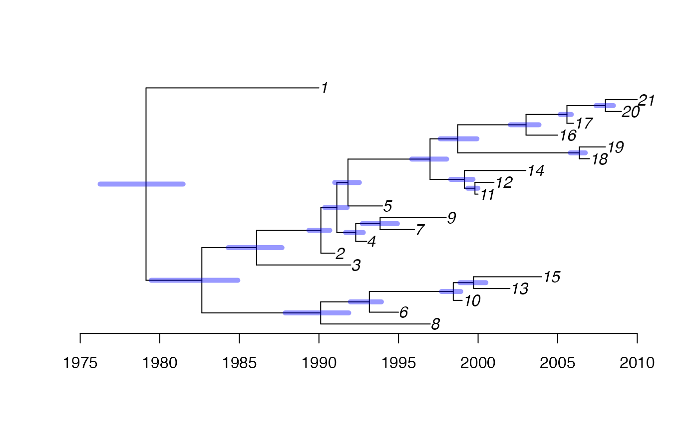

vignettes/exampleRec.Rmd
exampleRec.Rmd##Initialisation
##Data
A ClonalFrameML output can be read using:
A Gubbins output can be read using:
Instead, for the purpose of making this vignette self-contained, we will simulate an output from a recombination analysis. This is just an object of class phylo, unrooted and with the added field unrec representing the proportion that is unrecombined for each branch.
dates=1990:2010
truetree=simcoaltree(dates)
t=unroot(simobsphy(truetree))
t$unrec=runif(length(t$edge.length))
plot(t)
axisPhylo(backward = F)
edgelabels(round(100*t$unrec))##Analysis
We run BactDating as follows:

We can compare with the correct tree:
We can see what the MCMC traces look like: